Hand Particle Interaction
A webcam experiment: raise your hand and it pushes a field of floating letters out of the way, tracked live in the browser.
Photography
Shots I've taken and edited myself, chasing light, mood, and moments worth slowing down for.


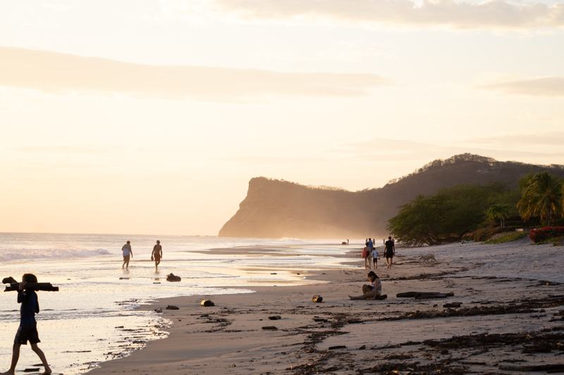
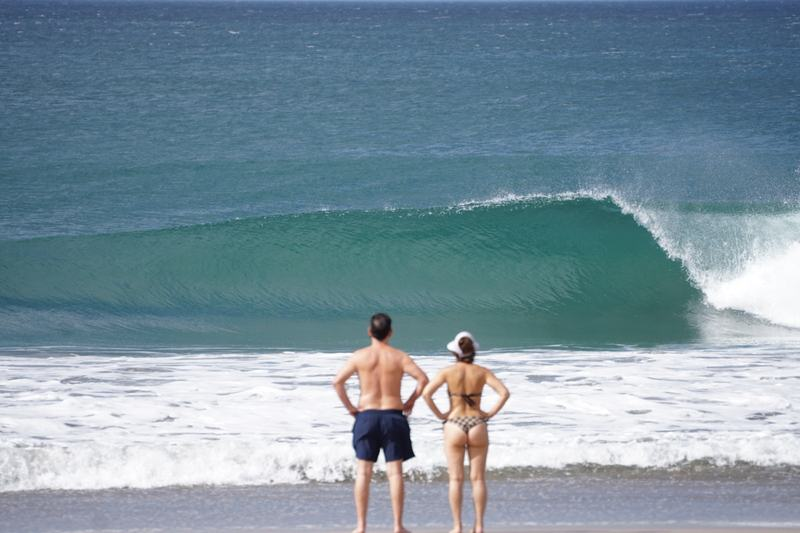
Through the Lens
A personal surf travel magazine: a collection of trips across Mexico, Costa Rica, and Nicaragua, laid out page by page.
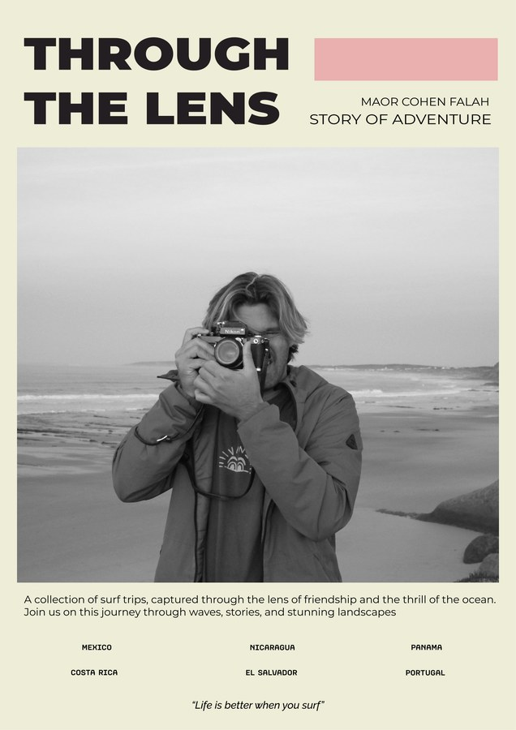
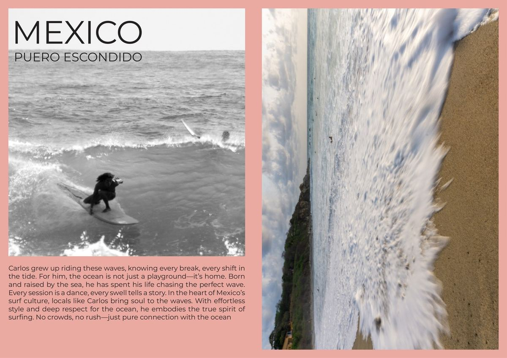
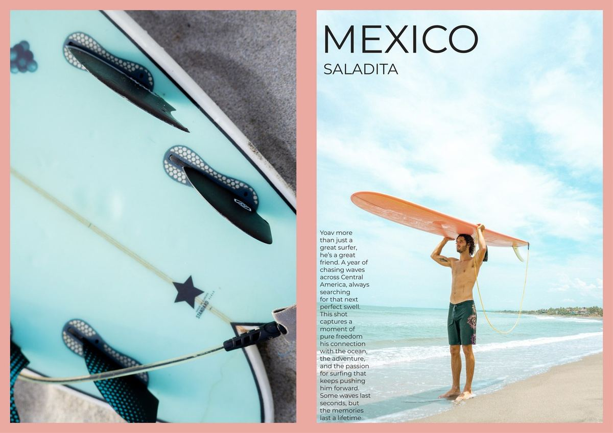
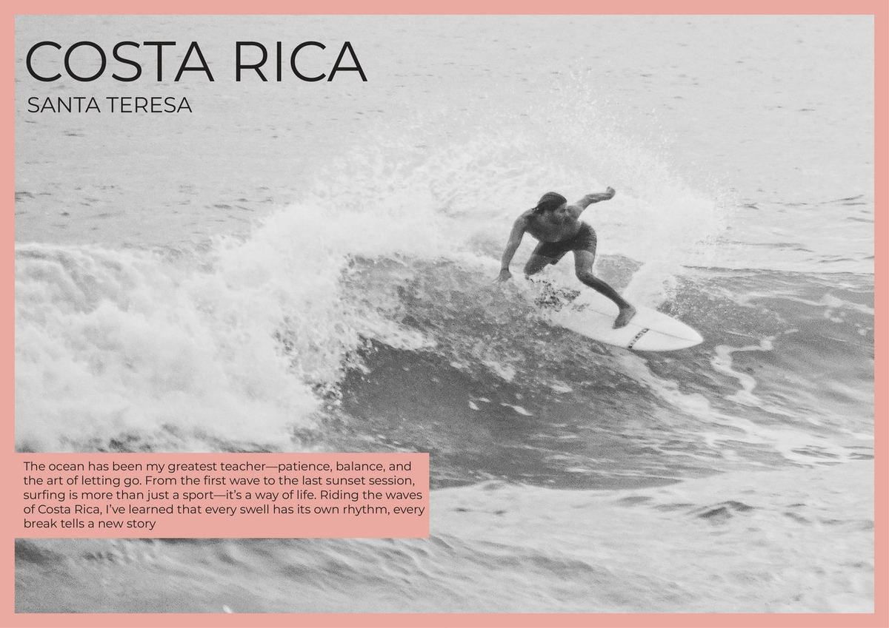
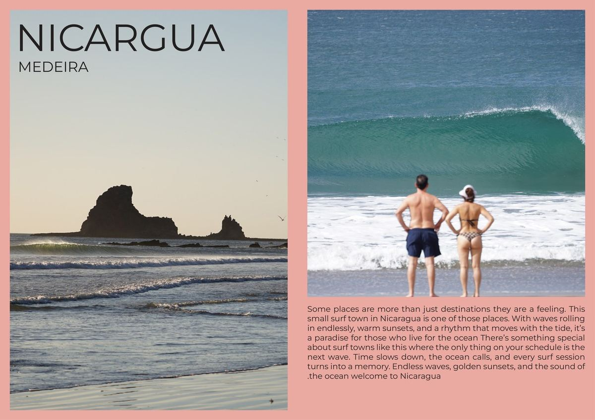
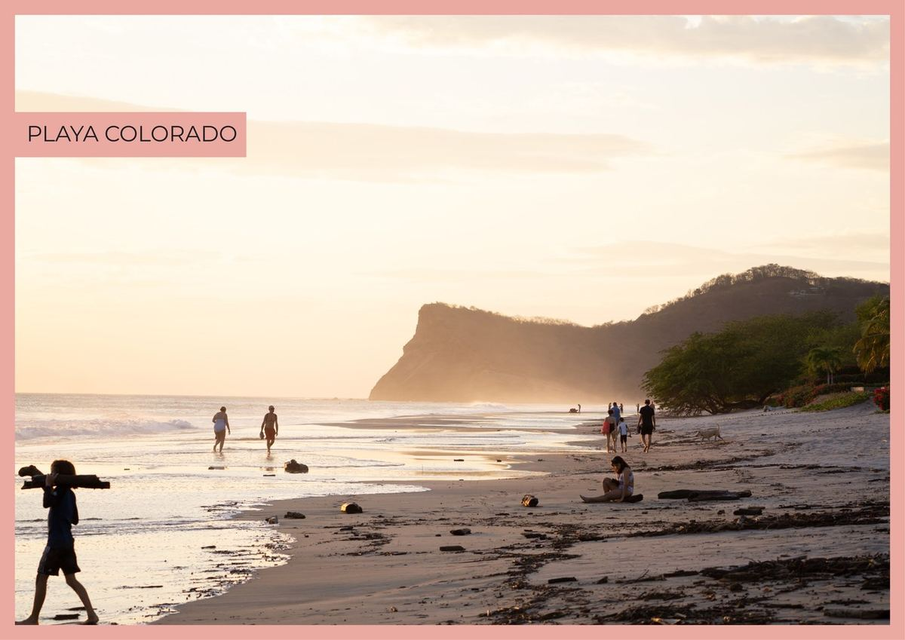
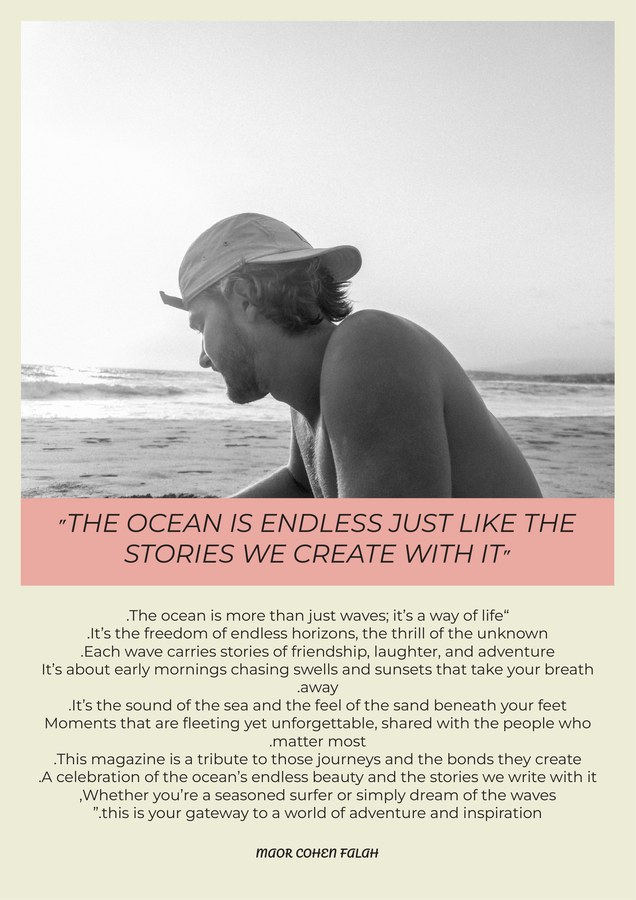
Tel Aviv, Then & Now
A magazine exploring Tel Aviv through its landmarks, pairing archival photos with the same spots today.
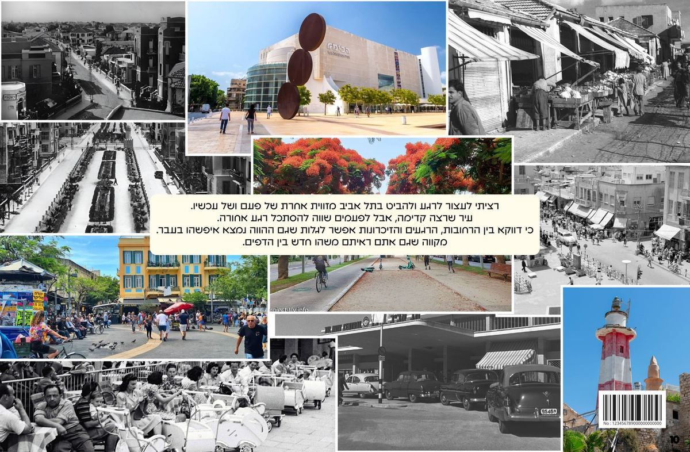
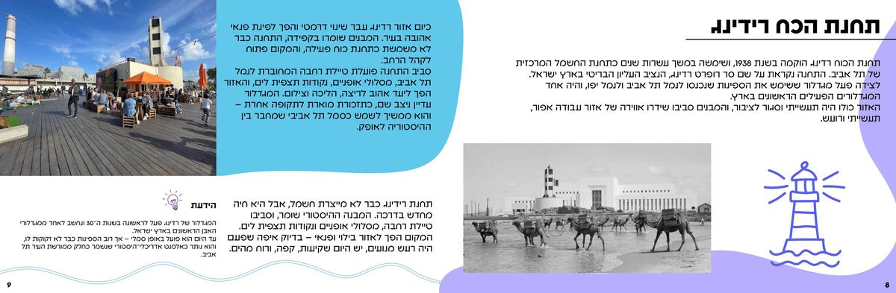
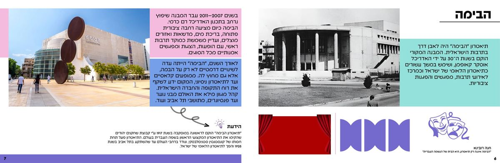
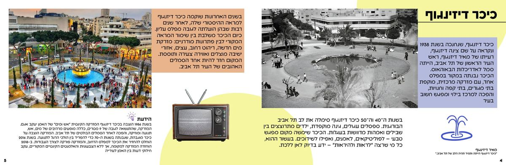
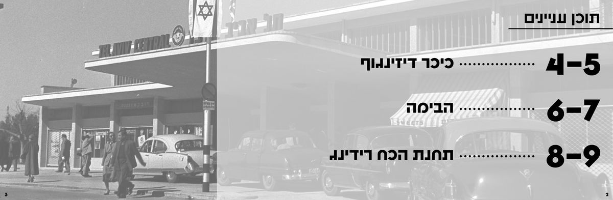
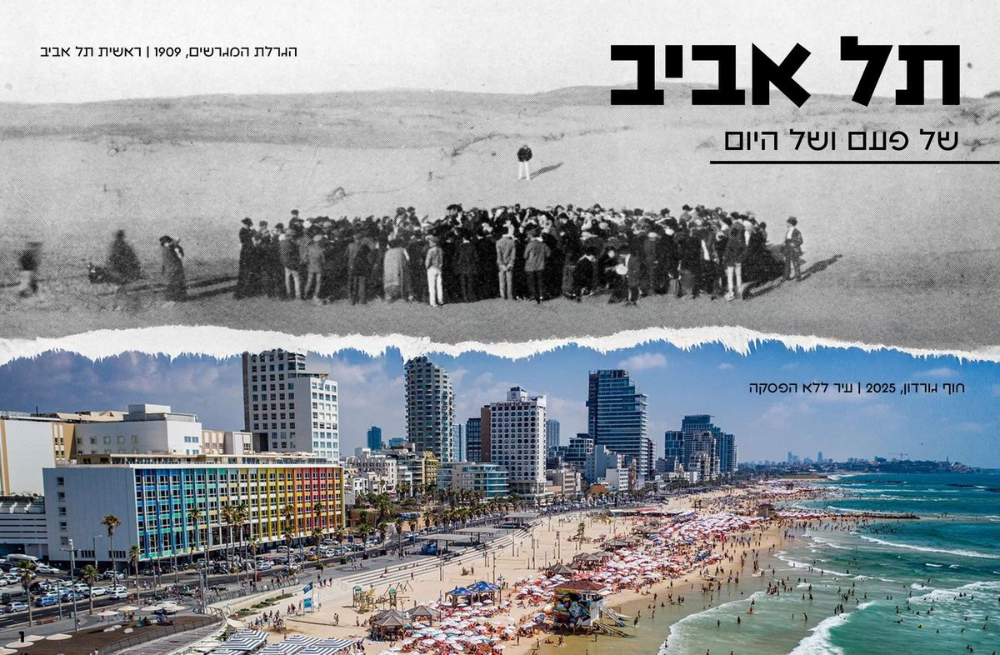
Salt Water Solutions
A magazine spread laid out just for practice. Hover to smooth out the page and read it.
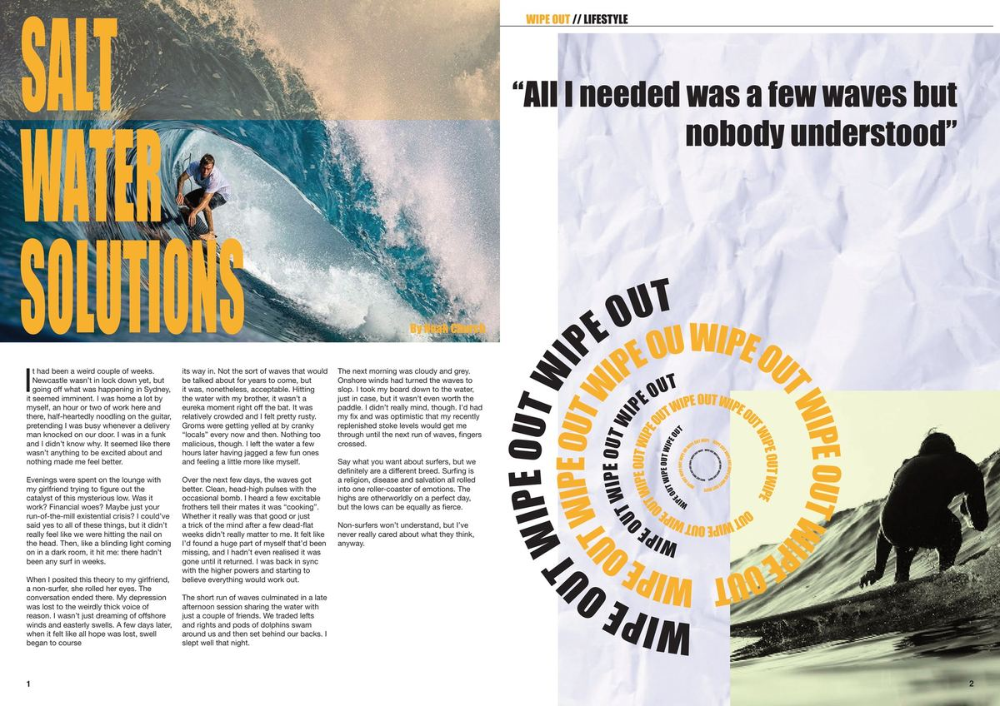
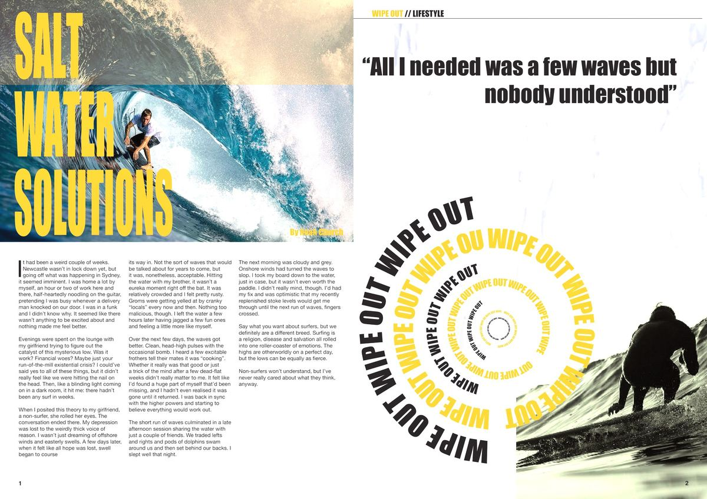
Animations
Motion pieces made just for the fun of moving things around.